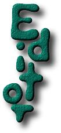
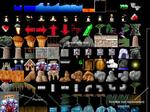

Building a level for Pingus is actually very easy with the current level editor, but there are still some things that doesn't work as they should. This little guide should make sure that everything works smooth for you.
First of launch Pingus and select the large Editor button. You are now inside the level editor.
Lets start with something simple, insert your first object. Press the Insert button on your keyboard or on the button panel at the left side of the screen. You will now see a list of object types you can insert. The letters in front of the type names describe the keys you have to press to insert the object type. Sorry there is at the moment no mouse support in the selection menus.
Ok, lets insert a ground piece of type ground, to do that press g. I'll explain the different ground piece types later in this article. After a short loading sequence, you will see a list of all the gfx which are available. To scroll down the list simply move the mouse to the bottom of the screen. Now click on an object to insert it into the level.
The first ground piece is now in place, you can simply click on it and move it around when you hold down the mouse button. To duplicate it press d. The duplicated object will be inserted at the same position as the original object, only with a short offset to the bottom/right.
If you want to move around the duplicated object, its a good idea to move it a bit away from the old object first, so that you don't actually select the wrong object. This becomes especially important when have grouped some objects. To do that use the cursor keys, hold down the shift key to get a faster movement.
Now that we have some ground to walk on, we need an entrance to let the Pingus enter the level. Hit insert and e for an entrance. You will now see a list of entrance types, select the "generic" one. After that is done you will see a black arrow with a green "G" to its site, that is the entrance or more exactly the position where the Pingus can enter the level. The "generic" entrance doesn't use any gfx.
The Pingus can now enter the level, lets place a exit so that they can leave it again. Again press Insert and then select Exit with x. You get the same list of surfaces you got when you inserted the ground piece. Select a surface, which looks like an exit and place it where the Pingus can reach it. Now your done the level should be ready for a test.
Now that the level is basically done, lets start it by pressing F4 or the "Run" key on the button panel. The level will than start and you can test it. If your are done press Esc or wait until the level is complete. After testing your level you will come back into the level editor.
Its a good idea to save the level from time to time, to do that press F6 and enter a file name for it, for example my_test. Node that the filenames must not have an ending like .plf or .psm. The level will than be saved to ~/.pingus/levels/my_test.plf and ~/.pingus/levels/my_test.psm
To load a level press F5 and input the filename. The dialog also has a primitive tab-completion. To use it activate the console by pressing ^ and then press Tab. The completion will go into the console. The tab-completion is currently not fully functional, therefor it will only work in the default directory and in no other directory.
You might have noticed that there is still a lot of stuff missing in your level. You have an ugly default background and your Pingus appeared out of nothing. So lets start to make it a little nicer.
To change the background press F10 and select one of the available backgrounds.
The default entrance just adds a position where the Pingus enter the level, but no gfx, so that is the next thing to add. To do that you have to use hotspots. Hotspots are graphical objects, which don't influence the collision map. To add a hotspot, press Insert and then h and select a thing that looks like an entrance. You need two surfaces for an entrance, one which is behind the Pingus and one that is above the Pingus to get a pseudo 3D effect.
Select the first hotspot and than lower it below the Pingus level which is at z_pos 75. Press Shift-PgDown to lower the z_pos value to -100, note that you can see the z-pos in the status line. PgDown itself will not change the z-pos, but instead only change the ordering of all objects, which have the same z-pos. After your done with the bottom hotspots add the top hotspot, to raise it press Shift-PgUp and bring it to a z-pos value of 100. Finally adjust the position so that it looks correct.
Stones alone looks much to simple to be attractive, so lets add some grass.
Grass is special since it shouldn't influence the way the Pingus are walking over the ground, but it should be erasable by explosions and diggers or miners, for this reason there is the special ground type "transparent". Press Insert and n and select a piece of grass and place it over the stones. Try to add some more ground pieces, and viola, the level looks much better now.
Now you might want to add some lava or water under the stones, but that is currently not implemented in the editor, so you have to editor the level files directly. Open your level file, which should be saved under ~/.pingus/levels/my_test.plf and insert the following text at the end of the file:
liquid {
image = (resource)"Liquid/lava";
x_pos = -40;
y_pos = 412;
z_pos = -100;
width = 1400;
}
liquid {
image = (resource)"Liquid/lava";
x_pos = -40;
y_pos = 412;
z_pos = 100;
width = 1400;
}
If you are done, save the file and reload it into the level editor. You will see then some lava floating around. Adjust the position of the lava and you are done. Its a good idea to have some lava in the background and another lava object on top of the level where the position is shifted a bit to the left, that will result in a pseudo 3D effect. If the lava is not width enough, change the parameter in the level file reload the level again.
Now you know the basics of level editing, all that is missing now is a good idea for a level. If you have created some levels, please mail them to Ingo Ruhnke so that they can go into the next Pingus release.
The next part of this tutorial will explain how the level are structured, how the objects are ordered and what object types exist.
Before I start to explain all the different object types its a good idea to understand the map structure of Pingus first.
A Pingus level consists of multiple layers of gfx maps and one additional layer for the collision detection.
The gfx maps consist of one layer for the background and on for the gfx-map, that's the ground where you can dig and blast holes in it. The rest of the gfx layers are hotspots objects, entrances, exits, etc. and the Pingus themselves.
To influence the ordering of objects you have two possibilities, first you can simply lower and raise it with PgUp and PgDown, but that will only work inside a layer. For example if you want to raise one ground piece above another that's the right way, but if you want to lower a hotspot below the ground layer, than that's the wrong way. To accomplish that you have to press Shift PgUp or Shift PgDown (or Ctrl) to change the z-pos of the object. If an object its below zero, than it will be draw behind the ground layer, if its above 75 it will get drawn above the ground map and the Pingus, if an object is between 0 and 75 it will be drawn above the ground layer, but behind the Pingus layer. So the z-pos describes the ordering of the layers.
Groundpieces are the ground where the Pingus can walk. They are they are at runtime combined to a single gfx map and then blitted at once. They can have different types, which will change the way how they are handled on the collision map.
Normal ground is of type ground, the Pingus can dig through it and walk on it and blast it away.
Solid ground is like the normal ground, but the Pingus can't dig through it. This is meant for metal plates and other stuff which is obviously not passable.
Transparent ground pieces are objects, which have no influence on the collision map, therefore the Pingus can't walk on it. But transparent ground pieces are blitted to the gfx map, so the Pingus will remove it if they explode or dig on it. This ground type is especially meant for grass or other little gimmicks which make a level nice, but which shouldn't have influence of it.
The bridges which a bridger builds are of type ground, the special property of the bridge property is that the Pingus can walk through it from
Hotspots are gfx objects which don't get blitted to the gfx map, instead they are draw separately. This has the consequences, that they can't be digged away and that they can scroll at a different speed than the rest of the ground (parallax scrolling). Hotspots also have the advantage that they have a z-pos, therefore they can be placed above or below the Pingus.
Entrances for example consist normally of three objects an hotspots for the back side of the entrance, an hotspot for the front side of the entrance and an entrance object for the middle position.
Entrances are the places where the Pingus enter a level, they normally don't draw any gfx, therefore it is required that you add some Hotspots above and below them to make them look realistic.
Exits are similar to hotspots, but they provide first an exit point, where the Pingus can leave a level and second they erase an area in the collision map, so that the exit isn't blocked by any objects in front of them.
Liquids are things like lava, water or acid. The consist of a single image which is blitted multiple times up to a given width. In addition to hotspots they also manipulate the collision map so that the area is marked as deadly.
{kind=link}
{kind=link}
{kind=link}
{kind=link}
{kind=link}